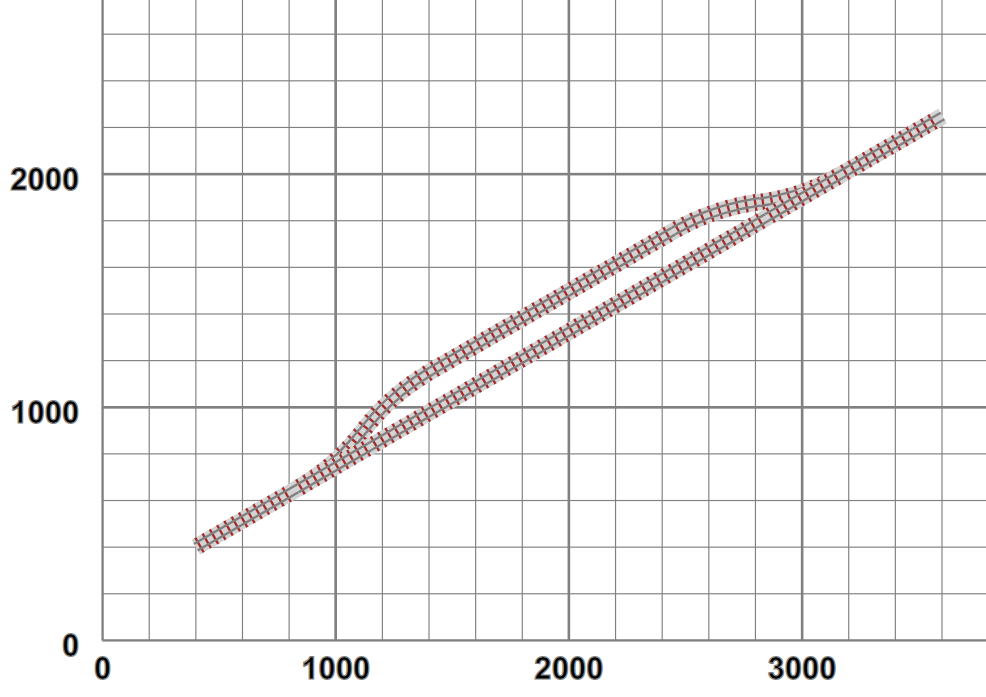

Thus far we have drawn schematic representations of the track as SVG line-based components. With a little work SVG is entirely capable of generating much more detailed views, with a lot of possibility of caching intermediate and reused sections. For example:
Figure 10. More detailed track
|  |
In this case the track is generated from a sequence of “rail-and-sleeper” subsection definitions, displayed via SVG's
use directive:
<g xmlns="http://www.w3.org/2000/svg" class="way"
transform="translate(3769.549241302635,2599) rotate(30)">
<use href="#track10" x="0" y="0"/>
<rect class="ballast" x="360" y="-36" width="140" height="72"/>
<use href="#sleeper" x="378" y="0"/>
<use href="#sleeper" x="414" y="0"/>
<use href="#sleeper" x="450" y="0"/>
<line class="rail SM32" x1="360" y1="-16" x2="500" y2="-16"/>
<line class="rail SM32" x1="360" y1="16" x2="500" y2="16"/>
</g>In this case we have a “pre-built” 10-sleeper section of straight track (#track10), followed by
“ballast”, three sleepers and two rails to display the remainder of the required length. All these are sized to the
actual dimensions of the track being used. This is translated and rotated into the required start position.